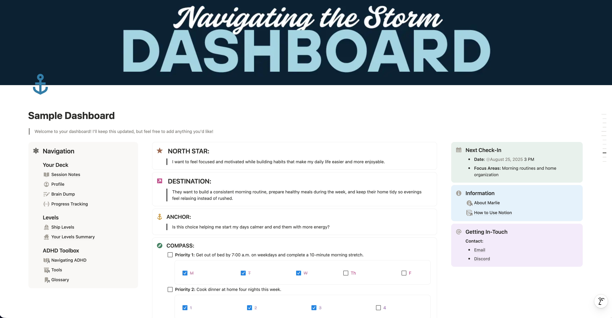
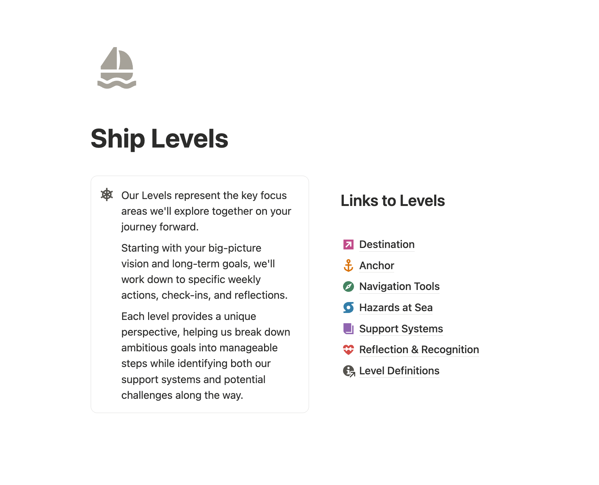

ADHD Coaching Framework
Evidence-based methodology for executive function support, featuring 15 interconnected levels
The Problem
Traditional coaching fails ADHD brains because it assumes neurotypical executive function. ADHD requires a fundamentally different approach that accounts for dopamine response, time blindness, emotional dysregulation, and executive function challenges.
Why Traditional Coaching Doesn't Work
- Assumes consistent executive function: Neurotypical models don't account for ADHD's variable energy, focus, and cognitive capacity
- Shame-first approach: Most productivity systems rely on guilt and "shoulds" that trigger ADHD's rejection sensitivity
- No regulation support: Skips the nervous system work needed before cognitive tasks
- One-size-fits-all: Doesn't adapt to ADHD's inconsistent energy patterns and needs
- No hazard navigation: Doesn't plan for storms and drift that derail ADHD progress
The Solution: A 15-Level Framework
I designed a systematic coaching methodology with 15 interconnected levels, progressing from psychological grounding through goal-setting to reflection. Each level addresses specific ADHD challenges while building on previous work.
The Framework Structure
🦺 Dockside Prep: Foundation Level
Life Vest: Self-compassion mantras to interrupt shame spirals before they start
Fuel Up: Nervous system regulation check-ins (food, water, meds, tension, overstimulation)
North Star: Core values and internal motivation identification
🧭 Navigation Tools: Goal Setting
Destination: Main goal in third-person framing ("Jordan wants to...")
Lighthouse: Long-term vision across 6 months, 1 year, 5 years
Anchor: Weekly grounding question/reminder
Compass: 1-3 concrete weekly priorities with time/place specificity
Sails/Oars: Energy mapping (when naturally focused vs when need tools)
🌩️ Hazard Recognition
Storms: Big challenges that knock you off course (fear, burnout, deadlines)
Drift/Sirens: Sneaky distractions (scrolling, over-planning, avoidance)
🛟 Support Systems
Lifeboat: Executive function support (PARA method, brain dumps, organization tools)
Buoy: Weekly check-in ritual
First Mate: Accountability partner/system
Logbook: Progress reflection method
Starlight: Wins and gratitude recognition
Why This Progression Works
The framework uses progressive scaffolding - you can't jump to planning (Compass) without emotional grounding (Life Vest) and regulation (Fuel Up). ADHD brains often skip these foundations and then wonder why strategies don't stick.
Design Philosophy
Built for ADHD Brains, Not Against Them
1. Regulation Before Planning
Traditional coaching starts with goal-setting. ADHD coaching must start with nervous system regulation because you can't access executive function when dysregulated. Life Vest (self-compassion) and Fuel Up (regulation check) come first.
2. Values Before Actions
ADHD brains resist tasks that lack emotional buy-in. North Star ensures goals connect to personal values, not external pressure. Without internal motivation, ADHD behavior change doesn't sustain.
3. Energy Alignment
Sails/Oars maps natural energy patterns instead of forcing productivity into arbitrary schedules. ADHD energy is inconsistent - the framework designs around it rather than fighting it.
4. Name Hazards Before They Hit
ADHD brains underestimate challenges until they're overwhelmed. Storms and Drift naming creates proactive planning instead of reactive crisis management.
5. External Systems, Not Willpower
Lifeboat uses PARA method, templates, and tools to offload working memory. ADHD executive function is limited - frameworks must externalize thinking.
6. Pattern Recognition Through Reflection
Buoy, Logbook, and Starlight create feedback loops. ADHD struggles with progress visibility - structured reflection builds self-trust.
Evidence-Based Design
The framework incorporates research from ADHD coaching, behavioral psychology, and neuroscience:
Key Research Insights
Default Mode Network
Life Vest addresses DMN's negative rumination by teaching "don't feed the demon" - shifting attention away from shame spirals
Oxytocin & Connection
First Mate recognizes that social connection reduces stress physiologically, not just emotionally
Interoception
Fuel Up addresses ADHD's weak interoceptive awareness by creating explicit check-ins for physical needs
Threat vs Challenge Mode
Storms planning shifts brain from threat response to challenge response through preparation
Dopamine Pathways
Starlight celebrates wins to activate healthy dopamine release, building sustainable motivation
Progressive Disclosure
Frequency table shows which levels to visit weekly vs as-needed, preventing overwhelm
Technical Implementation
Beyond the methodology, I built the technical infrastructure to support framework delivery.

Figure 1: The main coaching dashboard in Notion, designed to reduce cognitive load while providing quick access to all 15 levels of the framework.

Figure 2: Detail view of the 15 interconnected levels, showing the progressive scaffolding approach from Dockside Prep to Starlight Wins.
Custom Notion Dashboards
Created personalized templates for clients with ADHD-friendly features:
- Quick Sort Template for brain dumps
- Weekly Compass planning pages
- Storms and Drift tracking
- Logbook and Starlight reflection spaces
- PARA-method organization structure
Payment Processing
Integrated Stripe for seamless coaching session payments and subscription management.
Email Automation
Set up Resend for automated:
- Session reminders
- Buoy check-in prompts
- Resource delivery
- Follow-up communication
Calendar Integration
Implemented iCal for appointment scheduling, allowing clients to book directly into my calendar system.
Supporting Web Applications
Developed three React-based tools to support different framework levels:
- ADHD First Aid Kit: Crisis regulation tools (timers, grounding exercises)
- NAV Coaching Platform: Resource library, community features, booking system
- ADHD Dashboard: Habit tracking with adaptive theming
Impact & Results
Framework Development
- Created comprehensive 15-level methodology with detailed resource guides
- Designed progression from psychological grounding through goal achievement
- Built frequency-based coaching structure (weekly touchpoints vs checkpoint visits)
- Developed example implementations for different goal types (fitness, med school, home organization)
Technical Infrastructure
- Integrated payment, email, and calendar systems for seamless coaching delivery
- Built custom Notion templates optimized for ADHD executive function support
- Created scalable system for client accountability and progress tracking
Supporting Tools
- Developed three web applications supporting different framework levels
- User-tested with neurodivergent community for real-world validation
- Open-sourced ADHD First Aid Kit for community benefit
Scalability
The framework exists as a complete methodology that could be:
- Used by other ADHD coaches
- Integrated into coaching certification programs
- Adapted for group coaching or courses
- Licensed to coaching platforms
- Converted into an app or product
Lessons Learned
Coaching is product design
Designing behavior change systems requires the same skills as product development: user research, journey mapping, progressive disclosure, and iteration.
ADHD accessibility is systems thinking
You can't just add accommodations - you need to rebuild systems from the ground up based on how ADHD brains actually work.
Infrastructure enables delivery
Having Stripe, Resend, and iCal set up would have made it easier to focus on coaching vs admin. The technical foundation was valuable even if unused.
Methodology has standalone value
Even without scaling the business, the framework itself is valuable intellectual property that could be productized separately.